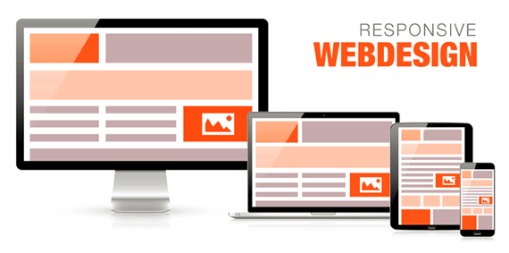
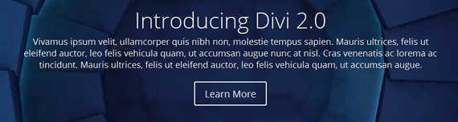
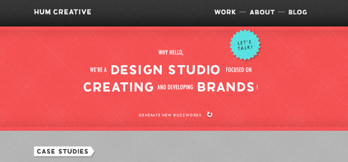
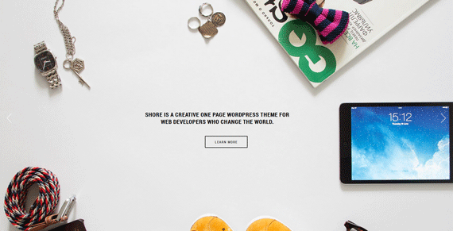
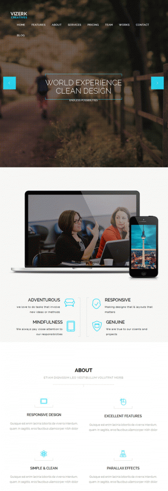
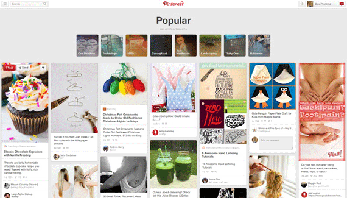
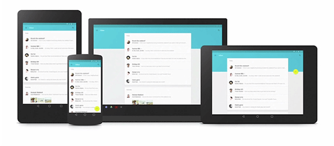
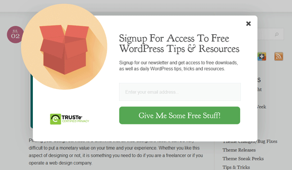
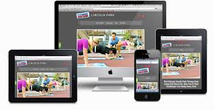
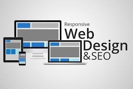

Xu hướng thiết kế website 2015
Ngày đăng: 03/07/2015 - Lượt xem: 621
Ngay từ bây giờ, bạn nên bắt đầu nhìn lại những xu hướng thiết kế website trong năm 2014 và đưa ra một vài dự đoán về những xu hướng mới xuất hiện trong năm 2015. Các doanh nghiệp sẽ chú trọng vào nội dung di động, tăng hiện diện trên truyền thông xã hội, đẩy mạnh email marketing và quảng cáo kiểu tự nhiên …
Responsive Web Design Xu hướng tất yếu
Responsive Web Design là xu hướng thiết kế ngày càng thịnh hành. Đây chính là giải pháp thiết kế đáp ứng cho việc hiển thị website trên các thiết bị di động, với các kích thước màn hình khác nhau.
Sự phát triển nhanh chóng của các Tablet, Smartphone và Mạng 3G tại Việt Nam đã đặt ra một yêu cầu đó là giao diện website phải thích nghi trên từng loại thiết bị khác nhau, cho dù người đó sử dụng Iphone, iPad, netbook, BlackBerry, Kindle...
Responsive Web Design là xu hướng mới, theo đó người thiết kế sẽ phải linh hoạt kết hợp các kỹ thuật bao gồm Flexible grid, Responsive Image và CSS media query. Song Responsive Web Design không chỉ là việc tùy chỉnh phù hợp với kích thước màn hình và resize lại hình ảnh mà nó tạo ra một định nghĩa hoàn toàn mới về thiết kế web. Tuy nhiên, mọi thứ đều có hai mặt của nó, Responsive Web Design cũng không ngoại lệ.
Dù bạn có sử dụng lý do gì cho việc không sử dụng responsive cho theme web của mình, chắc ai cũng sẽ cảm thấy nghi ngờ 100%. Trong vòng hai năm trở lại đây, xu hướng responsive đã khẳng định được tầm quan trọng của mình và dần trở thành một chuẩn mực mới trong việc thiết kế web nói chung, và các theme WordPress nói riêng. Nhìn chung thì vẫn còn một số tranh cãi là nên làm theme kiểu responsive hay là làm hẳn theme chuyên cho mobile luôn, nhưng không ai nói là “Hãy quên responsive đi!” cả, và thực tế thì ngày càng nhiều website đang đi theo hướng này. Đây là một xu hướng điển hình trong năm 2014 và chắc chắn sẽ còn phát triển mạnh mẽ trong năm 2015.

Responsive Web Design là xu hướng mới
Responsive là một thuật ngữ trong việc thiết kế web, trong đó, giao diện website sẽ tự động thay đổi kích thước, bố cục sao cho phù hợp với kích thước màn hình mà không làm mất đi nội dung của website. Đối nghịch lại là Adaptive, trong đó người thiết kế web phải làm hai bản riêng, một giao diện cho máy tính và một giao diện cho các thiết bị di động. Điều này đòi hỏi đầu tư nhiều tài nguyên hơn cho dự án. Ví dụ: Bạn truy cập news.zing.vn, sau đó điều chỉnh kích thước cửa sổ trình duyệt để thấy sự thay đổi.
Xu hướng thiết kế nút bấm tối giản
Những nút bấm này được thiết kế hết sức đơn giản, chỉ có một đường viền cùng với chữ bên trong, không có gì khác. Nếu bạn hover chuột thì sẽ có hiệu ứng màu mè gì đó, nhưng đó là khi hover, còn tổng quát thì nó xuất hiện khá nổi bật và thu hút được chú ý khi kết hợp chung với background cỡ lớn giống như đề cập ở mục 4 dưới đây.

Nếu sử dụng chúng một cách hợp lý không những tạo nên được hiệu ứng tốt trên giao diện website mà còn tốt cho Sale (tăng hiệu quả của CTA). ADC khuyến khích nên sử dụng phong cách này cho thiết kế website của bạn nếu bạn muốn sự rõ ràng, đơn giản nhưng vẫn thu hút và không lạc hậu, bởi vì xu hướng này vẫn sẽ còn thịnh hành trong một khoảng thời gian nữa.
Xu hướng thiết kế trang web theo Typography
Trước đây, những bộ font đẹp chuyên dụng trên web thường được bán với giá rất đắt. Điều này có nghĩa là các trang thiết kế theo kiểu typographic đều yêu cầu bội chi ngân sách, khiến cho những người dùng nhỏ lẻ nằm ngoài cuộc chơi. Tuy nhiên, thời thế đang thay đổi. Các bộ font ngày càng rẻ hơn (hoặc miễn phí, nếu bạn sử dụng Google Fonts), và điều đó nghĩa là các nhà thiết kế có cả một bầu trời tự do để vẽ vời và sáng tạo với website của mình. Ngoài ra, điều này cho phép các nhà sản xuất theme WordPress đính kèm nhiều font chữ hơn trong theme của họ, mang đến nhiều sự lựa chọn cho người sử dụng.

Sử dụng ảnh / video làm nền
Một yếu tố khác làm nên thành công của hầu hết các theme nổi tiếng hiện nay, là các thể loại ảnh nền và video đẹp, nhẹ. Đây được xem là một cách đơn giản để mang lại điểm nhấn cho website của bạn, khi nội dung cần thể hiện sẽ gây được sự chú ý lớn đối với độc giả. Xu hướng này đang nở rộ và dự là sẽ ngày càng được cải thiện trong thời gian tới.

Một ví dụ về việc dùng ảnh to làm nền trang landing
Xu hướng Cuộn, thay vì Click9 xu hướng thiết kế website năm 2015
Khi web trên di động đang bùng nổi và ngành công nghiệp thiết kế web sẽ tiếp tục thay đổi để mang lại những trải nghiệm hiệu quả và tốt nhất trên thiết bị, việc cuộn (scrolling) sẽ thay thế dần các cú Click chuột thần thánh. Bạn có để ý, cuộn lúc nào cũng ít tốn thời gian (chỉ việc di chuyển một ngón tay duy nhất trên con lăn) so với click (phải dùng cả bàn tay để di chuột, rồi nhấn thêm phát nữa). Trực quan, dễ xài, giảm thời gian load trang và cho phép nhiều nội dung động được thể hiện giữa người dùng và website.

Một ví dụ về website dạng One Page: User chỉ việc cuộn xuống và xem
Thiết kế theo phong cách Thẻ
Có lẽ bạn sẽ thấy phong cách này không mới, và đã gặp rất nhiều nơi, ví dụ như Google Plus hay Pinterest. Thẻ (Card) là một cách tốt để tổ chức các khối nội dung trên trang, sắp xếp lại chúng mà không làm mọi thứ rối tung lên, cung cấp rất nhiều dữ liệu trên màn hình và cả gợi ý người dùng tiếp tục “cuộn xuống để xem tiếp”. Nói ngắn gọn, card gọn gàng và đơn giản nhưng mang lại nhiều lợi ích. Đây là một trong những điều mà website cần, vậy nên đừng ngạc nhiên khi bạn thấy nó sẽ tồn tại và phát triển mạnh từ 2014 sang 2015.

Pinterest – Một ví dụ của website theo phong cách Card design
Xu hướng thiết kế Flat Design nở rộ hay Material Design đang trỗi dậy?
Thiết kế phẳng đã đạt được nhiều cú đột phá trong năm vừa rồi, và nó sẽ không chịu dừng lại trong năm 2015. Tuy nhiên, có thể, nó sẽ thay đổi thành một cái gì đó mới mẻ hơn, có lẽ là Material Design.

Material Design: giải pháp thiết kế cho cả smartphone, tablet và laptop
Khi ra mắt, "Android L" đã trở thành "iOS 7 của Google". Lần đầu tiên trong lịch sử, hệ điều hành của Google được cải tiến sâu, rộng và tuyệt đẹp đến như vậy. Vậy, ai là người đứng đằng sau thiết kế mới của Android?
Tất cả các chi tiết này đều thuộc về một nền tảng thiết kế mới của Google : Material Design (tạm dịch: Thiết kế Vật liệu). Ngôn ngữ thiết kế này được sử dụng để giải quyết một bài toán rất khó do chính Google tự đặt ra: sau nhiều năm liền ra mắt hàng loạt sản phẩm mới như Gmail, Google Docs hay Google Drive và Google Now, trải nghiệm hệ sinh thái dịch vụ của Google đã trở nên thiếu nhất quán. Dữ liệu của bạn sẽ được lưu tại các ứng dụng khác nhau trên PC, trên smartphone và tablet. Các ứng dụng khi thì sử dụng các nút bấm màu đỏ chủ đạo, đôi khi lại chuyển sang xanh da trời hoặc xám. Chúng đã trở nên cực kỳ rối loạn.
Vậy, Material design là gì?
Material design là “một cái gì đó” mà Google giới thiệu trong năm nay, cùng với hướng đi mới trong việc thiết kế giao diện mobile của họ. Bỏ qua mấy cái định nghĩa trên giấy tờ và các tài liệu chính thống, dựa trên các sản phẩm sử dụng Material Design mà Google đã thực hiện (ví dụ như giao diện Android L, hoặc app Google Play Store phiên bản mới nhất), chúng ta có thể tạm nói rằng, Material Design hầu hết là flat design sử dụng thêm các dải màu nhẹ, có phân chia từng lớp và có chuyển động (animation) giữa các lớp đó để mang lại cảm giác về một thế giới vật lý 3 chiều, mà vẫn giữ được các đặc điểm của flat design.
Video clip giới thiệu Material Design từ Google
Microinteraction – Tương tác nhỏ
Microinteractions là những trải nghiệm nho nhỏ bên trong một sản phẩm hoặc một khu vực nào đó trên website mà chỉ xảy ra trong một trường hợp nhất định nào đó. Ví dụ, khi bạn đọc một website nào đó và cuộn xuống tới gần cuối, sẽ có một popup nhỏ đề nghị bạn cung cấp email để nhận bài mới lần sau. Những tương tác này sẽ giúp thu hút được hành vi của user, trong trường hợp này là có nhiều người đăng ký nhận tin qua email hơn.

Cá nhân hóa trải nghiệm người dùng (UX)
Ý tưởng về việc sử dụng cookie để giúp bạn hiển thị những thông tin liên quan tới những vị khách quen không có gì là mới. Netflix dùng cookie để nhớ những bộ phim bạn thường xem. YouTube cũng vậy, ngoài ra còn gợi ý về những video mà có thể bạn hứng thú, dựa trên việc ghi nhận thông tin truy cập gần đây của bạn. Vậy, bạn nghĩ thế nào về việc một trang tin điện tử có sidebar liệt kê những bài viết “Vừa đọc”, giúp bạn quay trở lại nội dung trước đó? Hoặc ẩn đi những bài bạn đã xem để chừa chỗ cho những tin mới hơn được tự động cập nhật? Nghe rất thú vị và hứa hẹn phải không? Mình dự là những điều này sẽ sớm được các nhà phát triển để ý, và thật tuyệt hơn nữa khi họ phát hành plugin dành cho WordPress.
Xu hướng Website 2015 như thế nào?
Như bạn và tôi thấy đấy ngày nay khi mà công nghệ thay đổi theo từng giờ thậm chí là từng giây đòi hỏi chúng ta phải phát triển theo nếu không muốn bị đào thải. Website của chúng ta cũng vậy. Xu hướng Website 2015 có gì khác biệt chúng ta sẽ tìm hiểu bài viết sau đây nhé!.
Ngày nay chúng ta nhận thức được rắng các doanh nghiệp họ bỏ tiền ra đầu tư Website cho mình, không chỉ xây dựng cho máy tính, laptop mà cho cả các thiết bị di động nữa.

Mục đích phát triển Website trên mobile?
Chúng ta đều biết rằng nếu chúng ta muốn lướt quét và sử dụng các dịch vụ liên quan đến nó thì chúng ta phải có một chiếc máy tính được kết nối mạng và việc phải mang chiếc máy tính cồng kềnh ấy đến mọi nơi quả là một điều không dễ dàng phải không. Ngày nay con người ta có thể sở hữu một chiếc smartphone, taplet, máy tính bản và việc lướt Web trở nên dễ dàng hơn bao giờ hết. Nếu như trước kia bạn muốn truy cập Web và thực hiện các giao dịch như thanh toán online, đặt hàng thay vì ta phải mất công mở máy tính ra. Thì ngày nay đứng ở bất kỳ nơi nào bạn cũng có thể thực hiện được điều đó, chúng ta vừa tiết kiệm được thời gian, vừa cảm thấy tiện lợi vô cùng. Chính vì hiểu rõ điều đó xu hướng Website 2015 đã đẩy mạnh phát triển các website trên nền mobile. Nhưng nếu nói một cách chính xác hơn xu hướng này đã có từ trước nhưng 2015 có lẽ là thời điểm vàng của xu hướng này?
Website trên nền mobile?
1.Tự thiết kế?
Có nhiều Website họ thiết kế hẳn một giao diện riêng biệt chạy trên nền di động. Và với phương pháp này thì đòi hỏi bạn phải bỏ ra thêm một khoảng chi phí nữa.
Và điều này cũng khá dễ dàng đúng không khi chúng ta chỉ cần lựa chọn các nhà cung cấp dịch vụ tương ứng mà thôi.
2.Responsive?
Đây là một xu thế có thế nói là rất mạnh và được hầu hết các Website hiện nay áp dụng. Vậy Responsive có gì đặc biệt?
Responsive Web Design là xu hướng mới theo đó quy trình thiết kế và phát triển web sẽ đáp ứng mọi thiết bị và môi trường của người dùng theo các tiêu chí kích thước và chiều của màn hình thiết bị. Để làm được điều đó chúng ta sẽ sử dụng linh hoạt kết hợp các kỹ thuật bao gồm flexible grid, responsive image và CSS media query. Khi người dùng chuyển từ máy tính xách tay của họ sang iPad hay iPhone, trang web sẽ tự động chuyển đổi để phù hợp với kích thước màn hình và kịch bản xử lý. Nói cách khác, các trang web cần phải có công nghệ tự động đáp ứng theo thiết bị của người dùng. Điều này sẽ loại bỏ sự cần thiết cho nhiều thiết kế web khác nhau và giảm thiểu thời gian cũng như chi phí thiết kế web. Responsive Web Design sẽ giúp chúng ta thu hút được một lượng khách hàng tiềm năng thường xuyên sử dụng các thiết bị di động từ đó giúp tăng doanh thu đáng kể cho các doanh nghiệp. Đồng thời khi thực hiện Web Responsive hiệu quả chúng ta nên chú ý một số điều đó là chúng ta nên Tối ưu code Responsive Design để SEO Mobile. Chúng ta có thể tự tay mình tối ưu cho Website hoặc nhờ sự trợ giúp từ các nhà cung cấp dịch vụ SEO chuyên nghiệp để hỗ trợ chúng ta tốt hơn. Các bạn có thể tham khảo ở đây nhé: http://bigweb.com.vn/dich-vu-seo.html.

Và để thực hiện Responsive thuận lợ hơn thì có rất nhiều Framewwork ra đời hỗ trợ chúng ta. Và Framework mà chúng tôi muốn nhắc đến trong topic này đó là Bootstrap.
Bootstrap là một CSS Framework là phổ biến nhất hiện nay. Nó là một bộ công cụ giúp chúng ta design trang web bằng css nhanh hơn. Thay vì chúng ta phải xây dựng css cho các thành phần , thì ngày nay các công cụ và thư viện hỗ trợ chúng ta chúng ta chỉ cần add vào các vị trí thích hợp. Phần còn lại sẽ là công việc của Boostrap.
Ưu điểm của Bootstrap
- Hỗ trợ khả năng Responsive: tức là trang của chúng ta sẽ tự động co giãn theo các trình duyệt và các thiết bị di động.
- Khả năng tương thích tốt với các thiết bị mobile: đây là một yếu tố quan trọng, chúng ta không cần thiết kế giao diện riêng cho mobile, bạn chỉ cần thiết kế một lần cho tất cả các thiết bị.
- Được tích hợp một thư viện vô cùng phong phú và tương tác tốt với chuẩn HTML5 và CSS3 như hiện nay.
Từ khóa: Thiết kế web, xu hướng thiết kế web 2015, thiết kế web chuyên nghiệp, xu hướng thiết kế web, Thiết kế website, thiết kế web bán hàng, thiết kế web du lịch, thiết kế web bất động sản, thiết kế web trường học, thiết kế web nội thất, thiết kế web công ty, thiết kế web đào tạo, thiết kế web trường học, mẫu thiết kế website giáo dục, thiết kế web tin tức, thiết kế website tại hà nội, thiết kế website làm đẹp
Kiến thức website

Website chuẩn seo là gì?
Làm thế nào để có một website đạt chuẩn, seo tốt luôn được các cỗ máy tìm kiếm Google, Bing, Yahoo.. đánh giá cao, được ưu tiên xếp hạng cao trong kết quả...

10 Mẹo thiết kế làm tăng lượng truy cập vào website
Chuyên gia về SEO James Yorke chỉ ra một số cách làm tăng lượng truy cập thông qua cách thiết kế website của bạn.

Làm sao để thiết kế website doanh nghiệp thành công
Thiết kế website giới thiệu doanh nghiệp chuyên nghiệp đang là vấn đề được mọi CEO quan tậm hiện nay. Website chính là chiến lược hành đầu để tiếp cận khách...


 dongtho@bigweb.com.vn
dongtho@bigweb.com.vn


.png)